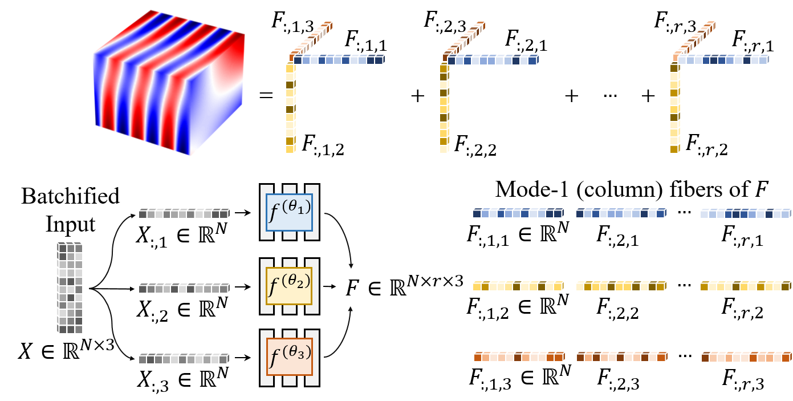

Low-Rank Representation
Due to its architecture and structural coordinate sampling, SPINN learns a low-rank decomposed representation of a solution.

We demonstrate that the computations in automatic differentiation (AD) can be significantly reduced by leveraging forward-mode AD when training PINN. However, a naive application of forward-mode AD to conventional PINNs results in higher computation, losing its practical benefit. Therefore, we propose a network architecture, called separable PINN (SPINN), which can facilitate forward-mode AD for more efficient computation. SPINN operates on a per-axis basis instead of point-wise processing in conventional PINNs, decreasing the number of network forward passes. Besides, while the computation and memory costs of standard PINNs grow exponentially along with the grid resolution, that of our model is remarkably less susceptible.
Given the same number of training points, we reduced the computational cost by 1,394× in FLOPs and achieved 62× speed-up in wall-clock training time on commodity GPUs while achieving higher accuracy.
SPINN consists of multiple MLPs, each of which takes an individual 1-dimensional coordinate as an input. The output is constructed by a simple product and summation.
Due to its architecture and structural coordinate sampling, SPINN learns a low-rank decomposed representation of a solution.
Our separated function architecture leverages forward-mode automatic differentiation (AD) to efficiently calculate the derivative.

$$\large{ \frac{\partial u}{\partial t} =\alpha\left\{ \frac{\partial}{\partial x}\left(u\frac{\partial u}{\partial x}\right) +\frac{\partial}{\partial y}\left(u\frac{\partial u}{\partial y}\right) \right\} }$$
$$\large{\frac{\partial^2 u}{\partial x^2}+\frac{\partial^2 u}{\partial y^2}+\frac{\partial^2 u}{\partial z^2}+k^2u=q}$$
$$\large{\frac{\partial^2 u}{\partial t^2}-(\frac{\partial^2 u}{\partial x^2}+\frac{\partial^2 u}{\partial y^2})+u^2=f}$$
@article{cho2023separable,
author = {Cho, Junwoo and Nam, Seungtae and Yang, Hyunmo and Yun, Seok-Bae and Hong, Youngjoon and Park, Eunbyung},
title = {Separable Physics-Informed Neural Networks},
journal = {Advances in Neural Information Processing Systems},
year = {2023},
}